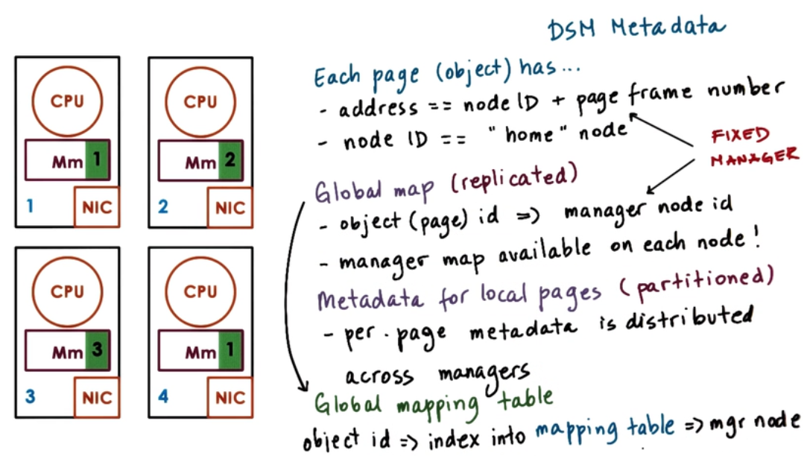
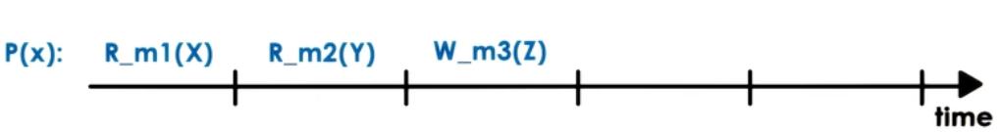
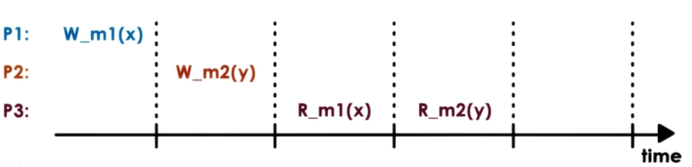
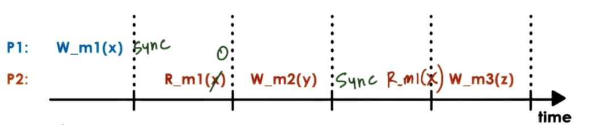

Distributed Shared Memory
- Must decide placement
- place memory (pages) close to relevant processes
- Must decide migration
- when to copy memory (pages) from remote to local
- Must decide sharing rules
- ensure memory generations are properly ordered
"Peer" Distribution Applications
- Each node
- "owns" state
- provide service
- all nodes are "peers".
Examples: Big-data analytics, web searches, context sharing or distributed shared memory (DSM)
Distributed Shared Memory (DSM)
DSM is a service that manages memory accross multiple nodes so that applications that are running on top will have an illusion that they are running on a shared memory.
- Each node
- "owns" state => memory
- provide service
- memory read/writes from any nodes
- consistency protocols
- permits scaling beyond single machine memory limits
- more "shared" memory at lower cost
- slower overall memory access
- commodity interconnect technologies support this RDMA(Remote Direct Memory Access)
Hardware vs Software DSM
- Hardware-supported (expensive!)
- relies on interconnect
- OS manages larger physical memory
- NIC(Network Interface Cards) translate remote memory accesses to messages
- NICs involved in all aspects of memory management; support atomics..
- Software supported
- everything done by software
- OS,or language runtime
- Hybrid (Software tasks in Hardware) DSM implementations
- prefetch pages
- address translation (easier done in hardware)
- triggering invalidations (easier done in hardware)
DSM Design : Sharing Granularity
- cache line granularity?
- overheads too high for DSM
- variable granularity [N]
- page granularity [Y] (OS level)
- object granularity [Y] (Language runtime)
- beware of false sharing E.g. x and y shared on same page
What types of applications use DSM?
Application access algorithm - Single reader/ single writer (SRSW) - Multiple readers/ single writer (MRSW) - Multiple reader/ Multiple writers (MRMW)
Performance considerations
- DSM performance metric == access latency
- Achieving low latency through
- Migration
- makes sense for SRSW
- requires data movement
- Replication (caching)
- more general
- requires consistency management
- Migration
- Hence, migration is okay for SRSW but not for all.
- Caching and Replication
- Copies of data to incerease data access
- for many concurrent writes, overheads too high but stil generally better than Migration
Consistency Management
- In SMP
- write invalidate
- write update
- coherence operations triggered in each write
- overhead too high
- Push invalidations when data is written to
- Proactive
- Eager
- Pessimistic
- Pull modifications information periodically
- on demand (reactive)
- lazy
- optimistic
- when these methods get triggered depends on the consistency model for the shared state
DSM architecture (page-based, OS-supported)
- Page-based DSM architecture
- distributed nodes, each with own local memory contribution
- pool of pages from all nodes
- each page has IO ("home" node), page frame number
- if MRMW
- need local caches for performances (latency)
- "home" or "manager" node drives coherence operations
- all nodes responsible for part if distributed memory (state) management
- Home node
- keeps state: page accessed, modifications, caching enabled/disabled, locked..
- Current owner
- owner may not be equal to home node
- Explicit replicas
- for load balancing, performance, or reliability home, manager node controls memory
DSM metadata

Implementing DSMs
- Problem : DSM must intercept access to DSM state
- to send remote messages requesting access
- to trigger coherence messages
- overheads should be avoided for local non-shared state (pages)
- dynamically engage and disengage DSM when necessary
- Solution : Use hardware MMU support!
- trap in OS if mapping invalid or access denied
- remote address mapping -> trap and pass to DSM to send message
- cached content -> trap and pass to DSM to perform memory coherence operations
- other MMU information useful (e.g. Dirty page)
Consistency model
- Agreement between memory (state) and upper software layers
- Memory behaves correctly if and only if software follows specific rules
- Memory (state) guarantees to behave correctly
- access ordering
- propagation/ visibility of updates
Our notation

- R_m1(X) => X was read from memory location m1
- W_m1(Y) => Y was written to memory location m1
Strict Consistency
Strict Consistency => updates visible everywhere immediately

- In practice
- Even on single SMP no guarantees on order without extra locking and synchronization
- in DS, latency and message reorder make this even harder
- Hence almost impossible to guarantee strict consistency
Sequential Consistency

Sequential consistency =>
- memory updates from different processors may be arbitrarily interleaved
- All processes will see the same interleaving
- Operations from the same process always appearin order they were issued
Causal Consistency

- For writes not causally related, "concurrent" writes doesnt gurantee.
- Don't permit arbitrary ordering from same process writer
Weak Consistency

- Use of synchronization
- Synchronization point => operations that are available (R,W,Sync)
- all updates prior to a sync point will be visible
- no guarantee what happens in between
+ limit data movement of coherence operations
- maintain extra state for additional operations
- Variations:
- Single sync operation (sync)
- Seperate sync per surface of state (page)
- Seperate "entry/acquire" vs "exit/release" operations